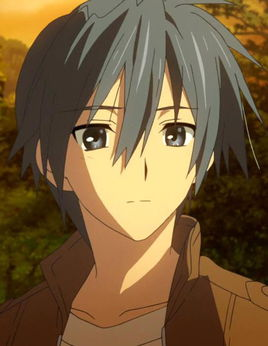
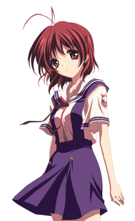
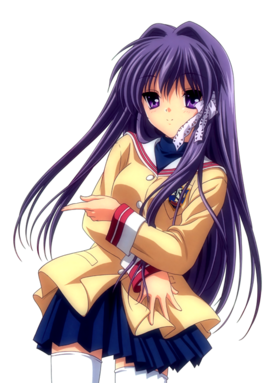

写作Clannad，读作人生
我们一起迈开了脚步…
在这长长的…长长的坡道上…
家族……被我拒绝的地方：在某个小镇，主角冈崎朋也因为家庭的因素成为不良少年，一直与春原阳平为伍，在光坂高校过着潦倒的生活，但冀望终有一天能够离开所在的小镇。某年4月14日，他在学校坡道前发现了一个止步不前的女孩，在朋也认识了这个名为“古河渚”的女孩后，他的生活开始有了重大的变化。
从我们呱呱坠地的那一刻，迎接我们的笑容便来自他们。 当我们悲伤痛哭的那一刻，安慰我们的也是他们。 等我们学会独自前行的那一刻，一直在身后鼓励我们的是他们。 是他们给予了我们心脏跳动的声音，是他们给予了我们实现梦想的动力，是他们给予了我们对未来美好生活的希望。我们不必急于询问他们为我们付出的原因，因为有一天，我们会将他们的行为用同样的方式，十年、二十年、五十年……永远传承下去，这也是“爱”在这个世界上衍生不息的意义......... 所以“他们”就有了一个神圣的含义——家人，一曲家人与爱的华丽乐章。
冈崎朋也
就读于私立光坂高等学校，作为不良少年而为全校闻名的高三学生。年幼时母亲因为事故而过世，之后和父亲一起生活，但两人的关系十分不好。高中以体育特长生身份入校，后来因为一些原因不能继续打篮球，和父亲的关系彻底破裂，身心受到双重打击，便自甘堕落。 有着帅气的外表和自身独特的魅力。在认识古河渚并确立了交往关系后，逐渐找到了对生活的信心和前进的动力，对待渚一心一意，在感情上是一个很专一的人。 在性格方面，表面冷漠、嘴巴很毒，但实际上是一个心地善良，很热心帮助他人的人，恶搞和吐嘈能力一流。有着较为敏锐的观察力，善于发现一些细节之处。在重要的事情上很坚决，并肯为之去努力。 和小镇有着很深的羁绊，是周围同伴中唯一一个能够看到传说中“光玉”的人。幻想世界的机器人偶与朋也是同一灵魂的不同个体，与女儿冈崎汐的灵魂在幻想世界作为人偶与少女相互陪伴着对方。
古河渚
光坂高中三年B班的学生，与朋也是同年级，身体很虚弱，曾经休学了很长一段时间，也因此年龄比朋也要大。古河秋生和古河早苗的女儿，家里是开面包店的，父母为了渚各自放弃了自己年轻时的梦想与工作，并将梦想托付在了渚身上。 小时候的一次意外后变得体弱多病，因此留级过一年。性格积极，有着复活演剧部的梦想，但由于缺乏自信，通常容易被周围的人们所忽视。 在留级第一年后与冈崎朋也邂逅后，与朋也的相处中令她得到了勇气，决心开始向着创立戏剧部的梦想迈进。之后与朋也结婚，并生下女儿冈崎汐。 女儿汐与渚名字有联系的是，“渚”的意思是海岸，“汐”的名字也是根据母亲而取的，潮汐潮起潮落总会回到海岸身边，意味着母亲（渚）永远守护在女儿（汐）的身边。
藤林杏
光坂高中三年E班的班长，藤林椋的双胞胎姐姐。性格傲娇，开朗阳光，充满着少女的活力。做事好胜要强，待人热情，崇尚直来直往。虽然性格直爽，但也不乏细腻和善解人意的时候，志向是成为幼儿园教师。 非常在乎椋的幸福，任何事情都以椋为优先，在椋遇到危险时能瞬间移动到她的身边。在感情上不太坦率，对朋也总是毒舌相向，但隐藏着的是纯真的少女心。一直以来暗恋着朋也，又因为椋的存在和自己的性格而不敢告白。[